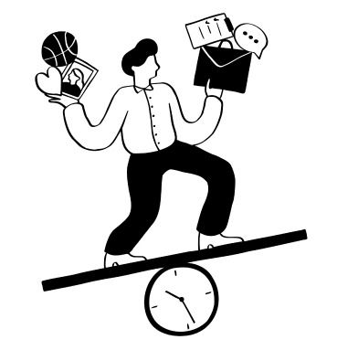
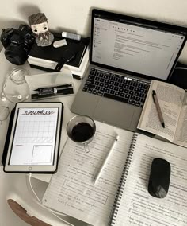

Time Management Tips for Students

One of the best skills a student can acquire, in terms of balance and success, is time management. Once you discover methods that keep you on track without overwhelming feelings, staying organized can become a breeze. For example, look into the Pomodoro method to study/work in increments with frequent break sessions. Always prioritize assignments and tasks; look into how to break large projects into smaller, manageable pieces so as to not become overwhelmed. Investigate time blocking for certain hours of certain projects; this not only keeps you on task for one thing at a time but allows you to avoid distractions when you can say "no" to intrusions since you have specific hours dedicated just to that thing. Goal setting, use of planners/digital calendars, and weekly reflective sessions are all ways to make sure you're on track and reiterating what you've learned. Remember to take breaks when needed; there is a positive correlation between good mental/physical health and appropriate break times, just don't go overboard for that can have adverse effects. Don't multitask and be sure to say no to avoid external temptations so that you can keep the integrity of time management intact.
How to Budget as a Student
Budgeting as a student is significant in that you get to maintain your financial security and not attract unnecessary stress. It starts by tracking your expenditures, which helps you realize how your money gets spent. With the division of your spending—whether food, transport, or entertainment—you'll be able to identify areas in which you might overspend. Meal planning too is a useful option; it can save quite a lot if you eat at home rather than eating out. Avoid impulse purchase behavior by making a list of what you intend to buy and the rest stick to it. Focus on using budgeting apps like Mint or You Need Budgeting (YNAB) to help make your life easy in tracking money in real-time, giving you updates about how much you spend and keeping you within your goals. Making monthly budgets based on your income and priorities will ensure that you stay within your means without the compromise on the student life. With a little bit of planning and self-restraint, being a student budgeting can ensure you stay stable financially and not be stressed as a student throughout.
Top 5 Study Habits for Exam Success

Passing an exam isn't as much about hard work as studying smart. High-achievers use time-tested study skills to maximize learning and retention. Space repetition is an extremely useful tool: you see material repeatedly after longer and longer intervals to encode it in your long-term memory. Another method that packs huge power is active recall: instead of re-reading material quietly, actively try to recall information from memory in order to help solidify what you learn. Almost as crucial is having uninterrupted study time with no interruptions—switch off your phone and create a quiet area to maximize concentration. Also, regular breaks are necessary; short breaks in between studying help stimulate your mind, preventing mental exhaustion. Last but not least, don't underestimate the power of a proper night's sleep and hydration—both contribute significantly to consolidating memory and focus. By including these habits in your study routine, you can realize your academic potential and tackle exams confidently.